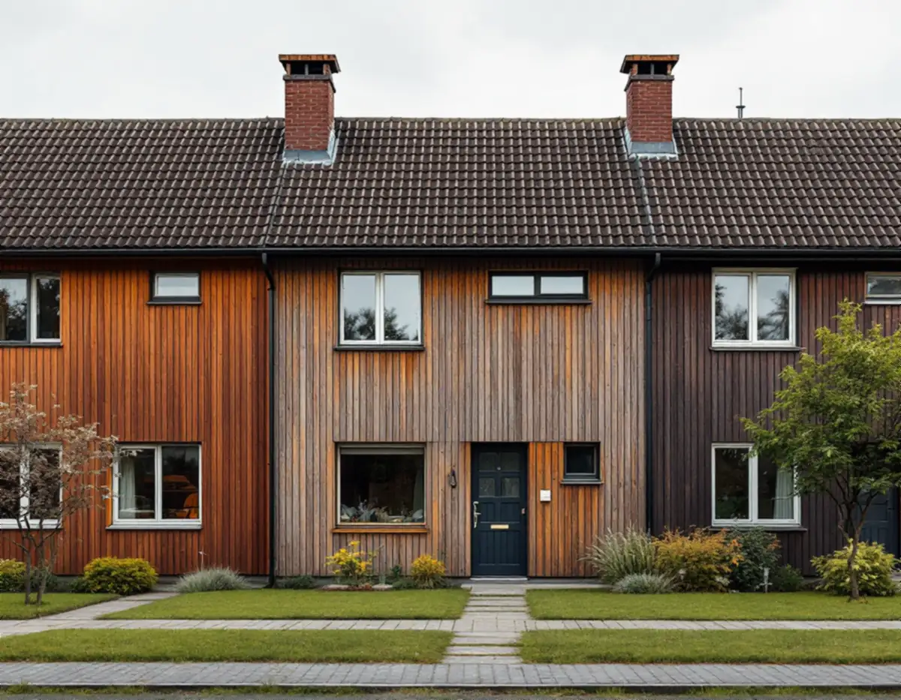
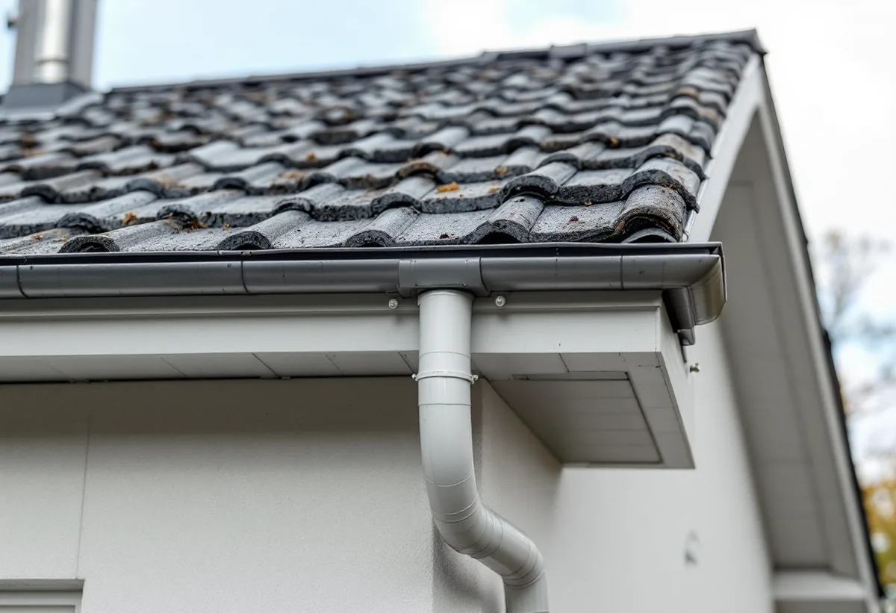

Vi läser av huset och längan
Vid besöket ser vi var ditt tak möter grannens och garagets, och hur takfallet är byggt.
I Järfälla gäller en takrenovering ofta radhus och kedjehus som byggfirmor uppförde i hela grupper från 1940-talet till 1970-talet, många med rött lertegel eller flacka papptak. Arbetet består i regel av nytt underlag, ny läkt och ny plåt, och eftersom husen sitter ihop måste skarven mot grannen planeras från början.

Kommunens kulturmiljöplan, antagen 1999, beskriver 63 kulturhistoriskt värdefulla miljöer, och många av dem är småhusområden byggda i ett svep. I Kallhäll lät Bolinders bygga radhus för sina anställda längs Bolindervägen från 1945, sammanlagt 21 längor, och intill dem egnahemsvillor i Skogstorp.
I Jakobsberg började Widmark & Platzer bygga Ekedalsområdet 1958, med radhuslängor i den lägre delen och villor högre upp som stod klara i mitten av 1960-talet. Från samma firma kommer kedjehusen vid Dressyrvägen i Jakobsberg och villorna vid Stålringen i Kallhäll, medan grändvillorna vid Hovvägen uppfördes kring 1960 av Svenska Industribyggen.
Viksjö byggdes ut under 1970-talet och domineras av radhus. Längst bort från rekordårens grupper ligger Lund vid Mälaren, som kulturmiljöplanen kallar kommunens äldsta fritidshusområde, med enkla trähus på stora tomter från tidigt 1900-tal.

Enligt kulturmiljöplanen för Jakobsberg är taken vid Skogsvägen–Toppvägen, Dressyrvägen och Betselvägen täckta av rött lertegel, och grändvillorna vid Hovvägen har tvåkupigt rött lertegel. I Ekedal har radhusens flacka tak tjärad papp, medan villorna och souterrängradhusen har tegel som i några fall bytts mot svart betongtegel.
Samma byte beskrivs i planen för Kallhäll: i Bolinderbyn och Skogstorp var teglet ursprungligen rött lertegel, men både material och färg har på flera håll ersatts, till exempel med svart betongtegel. På de branta tegeltaken är det oftast underlaget och läkten som tagit slut, på papptaken själva tätskiktet och takfoten.
I en radhuslänga går takfallet över flera fastigheter, och kedjehusen vid Dressyrvägen och Skogsvägen binds ihop av garage med egna små tak. När ett hus renoveras måste skarven mot grannen göras så att vatten inte letar sig in under den gamla delen, och plåten vid gränsen behöver passa båda.
Kulturmiljöplanen trycker på att längorna bör ha samma material och en genomtänkt färgsättning, eftersom helheten är det som gör områdena värdefulla. Därför lönar det sig ofta att grannar planerar tillsammans, även om var och en beställer och betalar sitt eget tak.
Vid Stålringen sparades enligt planen den ursprungliga barrskogen i områdets utkanter, och i Lund ligger stugorna på lummiga trädgårdstomter nära Mälaren. Tall och gran ger barr i rännorna och mossa på skuggiga takfall, och på de flacka papptaken blir barr och löv liggande längre än på branta tegeltak.
Därför tar vi med rensning av avvattningen och en bedömning av påväxten i varje renovering. Är taket i övrigt friskt kan en taktvätt räcka en tid till.
På sidan om fasadändring skriver Järfälla kommun att det inte krävs bygglov för fasadändringar på en- eller tvåbostadshus, men att det inte gäller för särskilt värdefulla byggnader och områden eller där detaljplanen har utökad lovplikt. Det stämmer med Boverkets beskrivning av reglerna som gäller sedan den 1 december 2025. Att ändra taklutning eller höja taket bedömer kommunen enligt sidan om tak oftast som en tillbyggnad.
Kulturmiljöplanen föreslog redan 1999 utökad lovplikt vid kommande planändringar för bland annat Skogsvägen–Toppvägen, Ekedal, Dressyrvägen och Bolinderbyn. Om det har införts beror på vilken detaljplan som gäller för just ditt hus, så vill du byta från lertegel till något annat bör du kontrollera planen först. Mer om reglerna finns under bygglov för takbyte.
På ett tegeltäckt kedjehus eller radhus lyfter vi av pannorna, river papp och läkt ner till råsponten och lagar den där den är skadad. Därefter läggs ny underlagspapp och ny läkt, och fotplåt, vindskivor och plåten mot grannen och garaget görs om. Hela lertegelpannor går ofta att lägga tillbaka, och vill du gå från svart betongtegel tillbaka till rött tegel går vi igenom vad det innebär; se tegel, betong eller plåt.
På Ekedals flacka papptak handlar renoveringen om nytt tätskikt, ny takfot och bättre ventilation, se platta och låglutande tak. Hur vi arbetar i kommunen beskrivs på sidan om takläggare i Järfälla, och metoden i stort under takrenovering.
Vid besöket ser vi var ditt tak möter grannens och garagets, och hur takfallet är byggt.
Vi går igenom om området omfattas av kulturmiljöplanen eller utökad lovplikt innan material eller kulör väljs.
Du väljer om befintligt lertegel ska tillbaka, om det ska kompletteras eller om taket får nya pannor.
Pannor, gammal papp och läkt tas bort och råsponten kontrolleras och lagas.
Ny underlagspapp och läkt läggs, och fotplåt, vindskivor och anslutningar mot grannen görs om.
Rännor och stuprör byts eller rensas, och vi går igenom skarven mot grannhuset innan ställningen tas ner.
Rotavdraget är 30 procent av arbetskostnaden, högst 50 000 kr per person och år, och ROT och RUT får tillsammans vara högst 75 000 kr. Material och resor ger inget avdrag, och vi drar av beloppet direkt på fakturan. Äger ni radhuset tillsammans kan ni dela på avdraget, enligt Skatteverket.
Byter flera grannar i en länga tak samtidigt gör var och en avdraget för sitt eget hus. Bor du däremot i ett bostadsrättsradhus är taket föreningens: Skatteverket ger bara rotavdrag för arbete inne i en bostadsrätt. Kulturmiljöplanen anger att radhusen i Bolinderbyn upplåts med bostadsrätt, så där är det föreningen som beställer och betalar. Läs mer om ROT-avdrag för takarbete.
Kostnaden för en takrenovering i Järfälla beror mycket på hur huset hänger ihop med grannarna. Ett friliggande sadeltak är enklare än ett radhus där plåten mot grannen och garaget ska göras om, och ett flackt papptak kräver andra material än ett tegeltak. Hur mycket av teglet som kan återanvändas och om råsponten behöver lagas avgör resten. Läs hur vi räknar på vad en takrenovering kostar, eller testa kalkylatorn.
Takbyte, besiktning och plåtarbeten.
Takläggare i Järfälla →Så fungerar en omläggning.
Takrenovering och takomläggning →Det här styr priset.
Vad kostar en takrenovering? →Räkna på takytan och ROT.
Takbyte-kalkylator →Norrviken, Tureberg och Edsberg.
Takrenovering i Sollentuna →Bollstanäs, Vilunda och Runby.
Takrenovering i Upplands Väsby →Trädgårdsstäder, tegel och funkistak.
Takrenovering i Bromma →